CS184/284A Spring 2025 Homework 2 Write-Up
Link to webpage: cs184.eecs.berkeley.edu/sp25
Link to GitHub repository: cs184.eecs.berkeley.edu/sp25

Overview
In this homework I implemented Bezier curves and surfaces using de Casteljau’s algorithm, and then worked with triangle meshes using the half-edge data structure. I added operations like vertex normals, edge flips, edge splits, and finally Loop subdivision to upsample meshes. The hardest part was keeping track of all the halfedge pointers cause if even one of them is wrong the mesh it gets ruined.Section I: Bezier Curves and Surfaces
Part 1: Bezier curves with 1D de Casteljau subdivision
De Casteljau’s algorithm evaluates a Bezier curve by repeatedly linearly interpolating between adjacent control points using \(t\).
Each step makes a new set of points \(p_i' = (1-t)p_i + tp_{i+1}\) until there’s one point left, which is the point on the curve at \(t\).
I implemented this in BezierCurve::evaluateStep by looping through the input points, lerping each adjacent pair with \(t\), and push_back’ing into a new vector.
Here is an example 2x2 gridlike structure using an HTML table. Each tr is a row and each td is a column in that row. You might find this useful for framing and showing your result images in an organized fashion.
|
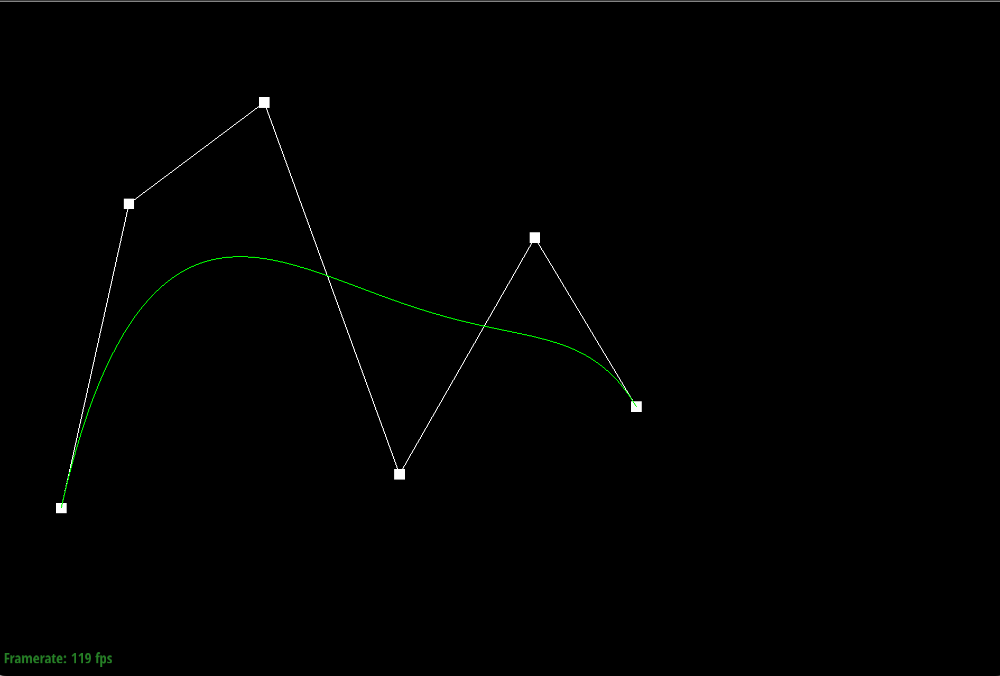 |
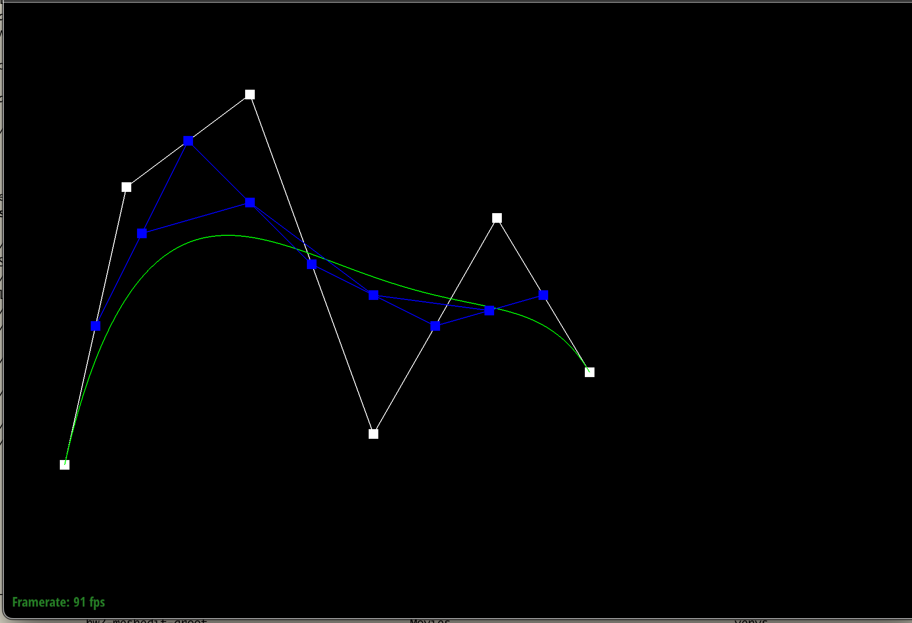 |
|
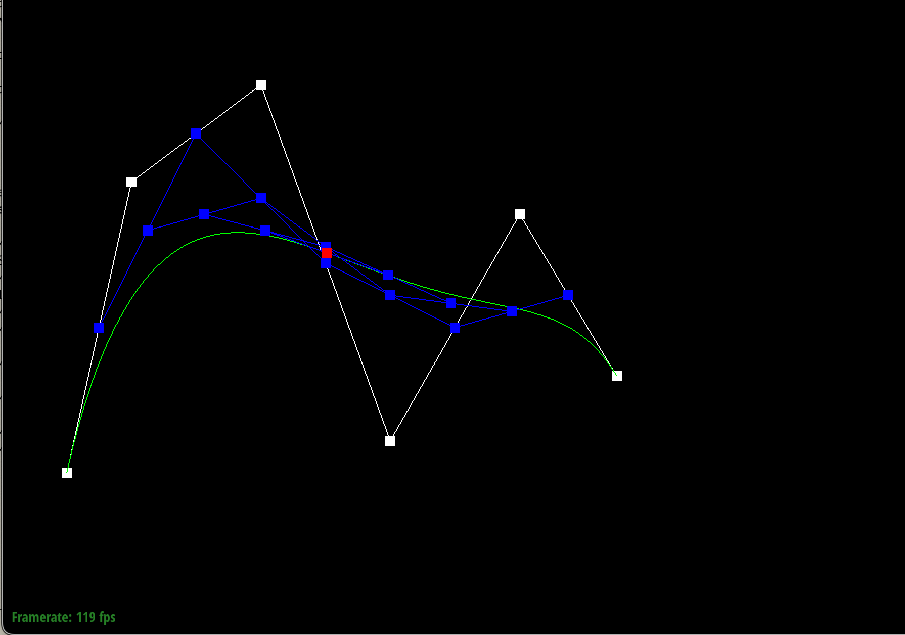 |
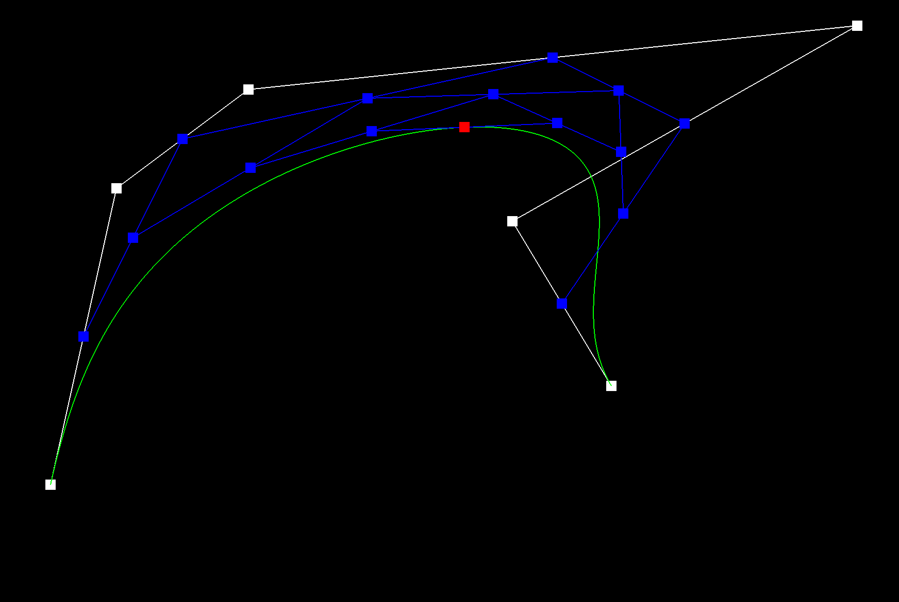 |
Part 2: Bezier surfaces with separable 1D de Casteljau
For surfaces it’s the same de Casteljau idea but done twice: first treat each row of the control grid as a Bezier curve and evaluate it at u, which gives one point per row.
Then those points form another Bezier curve and I evaluate that at v to get the final surface point.
I implemented this by reusing the same 1D “lerp between neighbors” step (evaluateStep), looping it in evaluate1D, then doing row-at-u followed by column-at-v in evaluate.
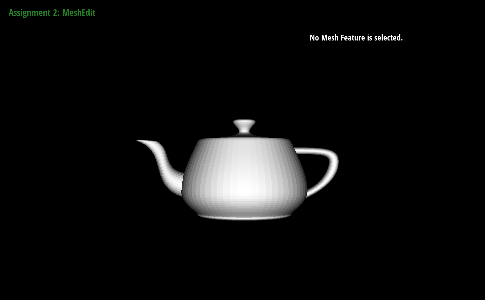
Section II: Triangle Meshes and Half-Edge Data Structure
Part 3: Area-weighted vertex normals
I did vertex normals by walking around the “fan” of triangles touching a vertex using the halfedge pointers. For each triangle, I grabbed its 3 vertex positions, took a cross product to get the face normal (which is automatically area-weighted), summed all of those up, and normalized at the end. When I press Q in meshedit it switches from flat shading to smooth shading using these normals.

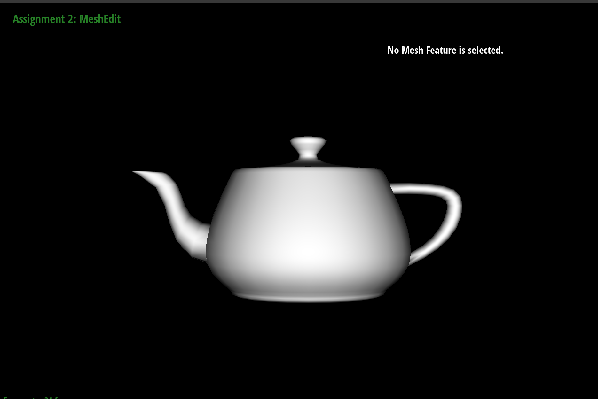
Part 4: Edge flip
For edge flip I basically just grabbed the two triangles that share the edge (so 6 halfedges total: the edge’s halfedge + its twin, and the two “next” halfedges on each face). If either adjacent face is a boundary face I just return and don’t flip. Otherwise I rewire the local pointers so the old edge (between the two shared vertices) becomes the diagonal connecting the two opposite vertices, and I set next/twin/vertex/edge/face for each of the 6 halfedges (plus updating the affected vertex/edge/face halfedge pointers). My main “debug trick” was literally drawing the local picture and then setting every pointer explicitly, because missing one pointer makes the mesh instantly explode or select weird stuff.

|
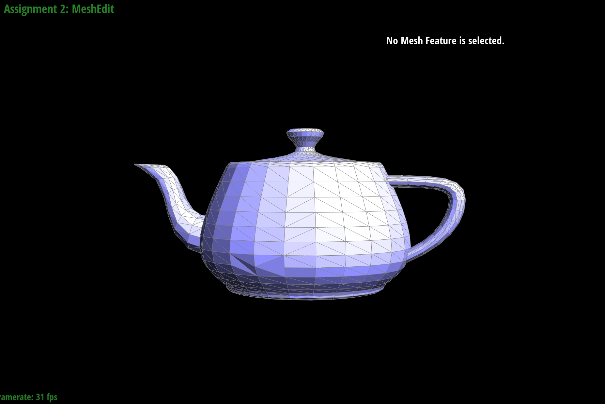 |
Part 5: Edge split
For edge split I only touch the local neighborhood around the chosen edge . I ignore boundary edges, make a new vertex at the midpoint, then create the minimum new stuff (3 new edges, 2 new faces, and the needed halfedges) so the original 2 triangles become 4 triangles. The main trick was labeling all the halfedges in a drawing first and then setting next/twin/vertex/edge/face for every halfedge explicitly if you miss even one pointer the mesh messes up itself.
|
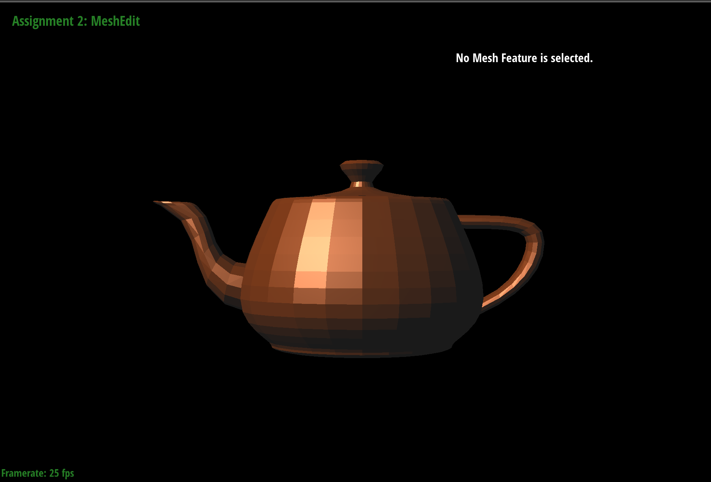 |
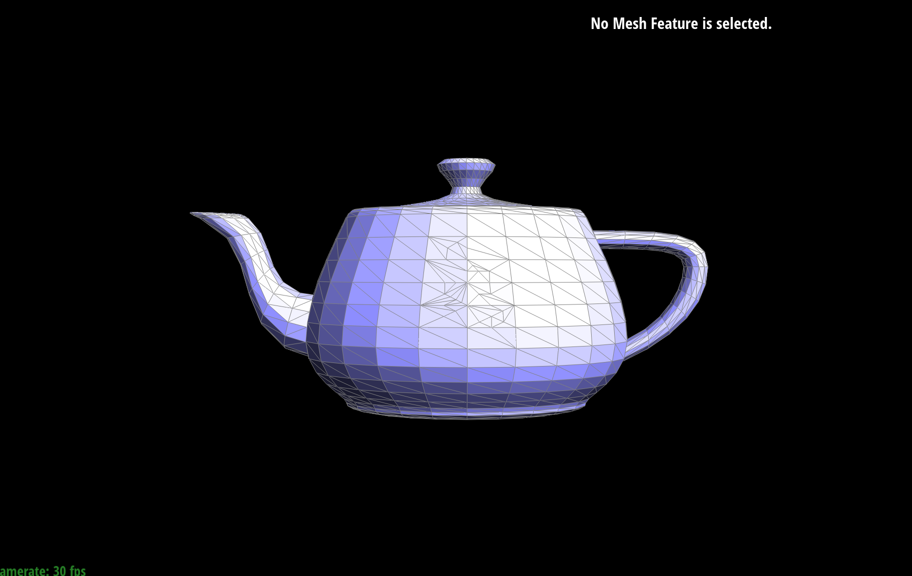 |
|
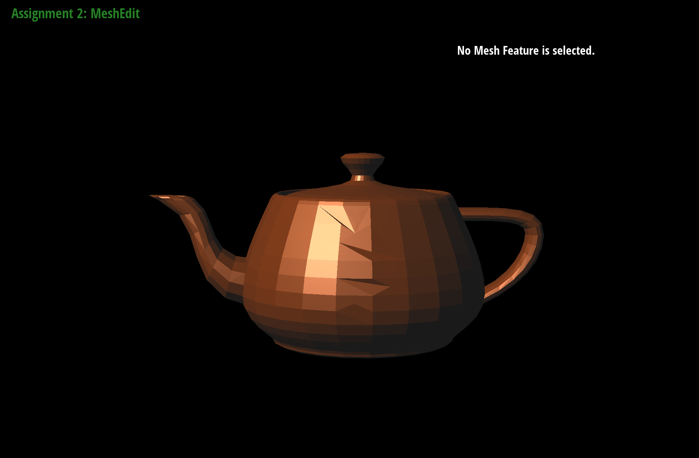 |
Part 6: Loop subdivision for mesh upsampling
For Loop subdivision I first computed all the updated positions on the original mesh and stored them in newPosition, since doing that after splitting everything would be way more painful. Then I split every original edge, flipped the new edges that connect one old vertex and one new vertex, and copied the stored positions into the actual vertex positions. The main thing that helped was uing isNew on both vertices and edges so I could keep track of what was original and what got created during subdivision, because otherwise itll gets confusing insanely fast.
After subdivision the mesh gets a lot smoother and starts approximating a rounder limit surface. Sharp edges and corners get softened, so stuff like a cube starts losing its hardness pretty fast. You can reduce that a bit by pre splitting or flipping edges in a more symmetric way before subdivision, since that gives the algorithm a clean and more balanced connectivity to work with.
When I ran Loop subdivision on the cube a few times, the cube became slightly asymmetric. That happens because even though the geometry starts symmetric, the triangulation/connectivity of the cube isn’t perfectly symmetric, so subdivision fixes that imbalance and smooths different regions a little differently.
Preprocessing helps because Loop subdivision depends on the local mesh structure when computing new vertex positions.|
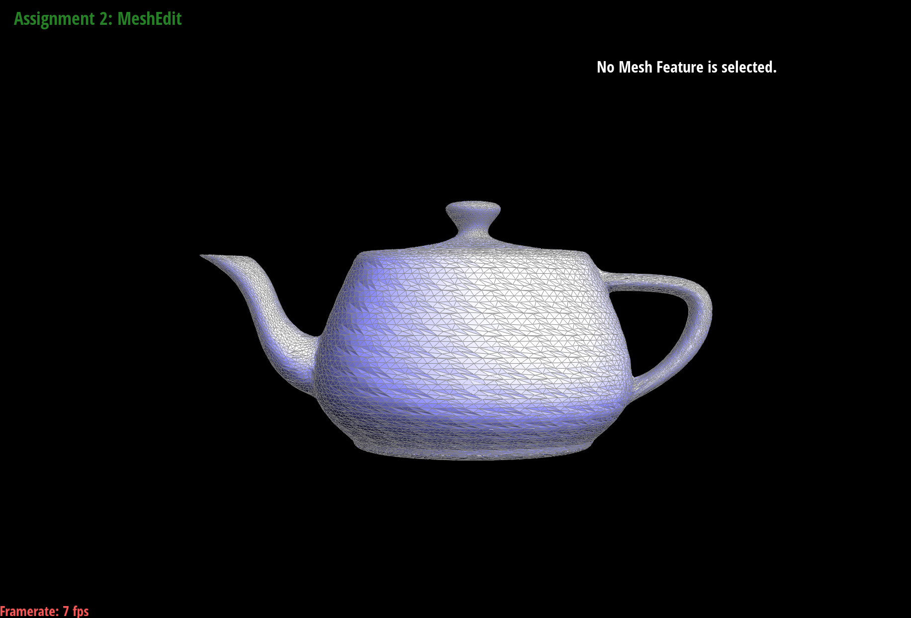 |
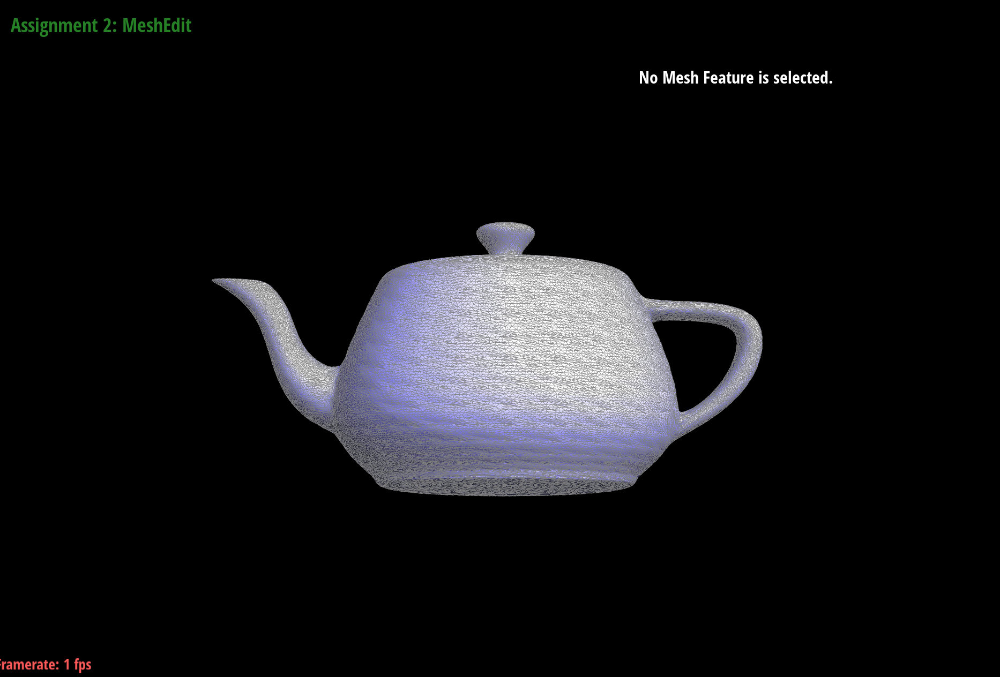 |
|
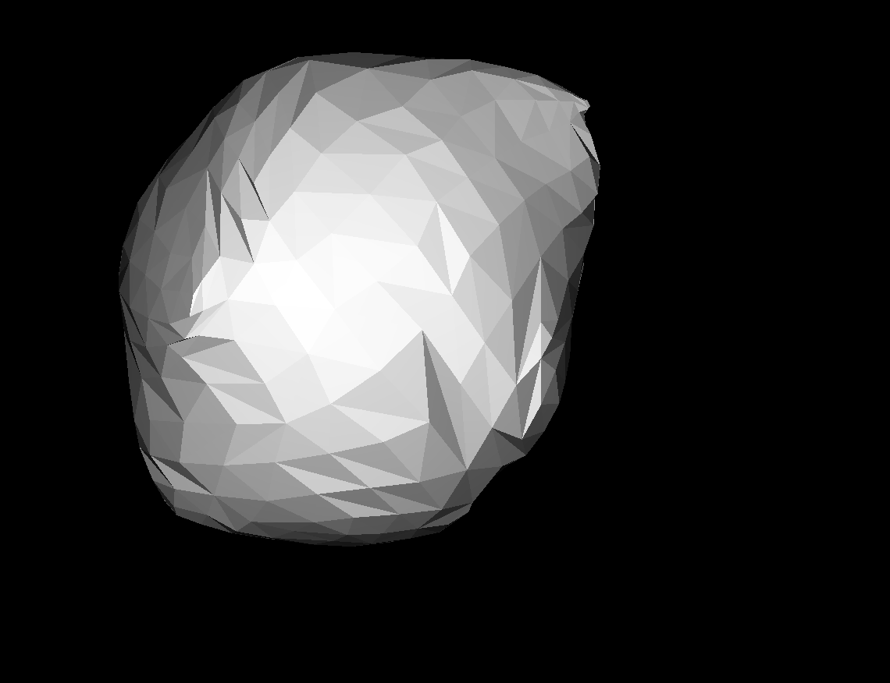 |
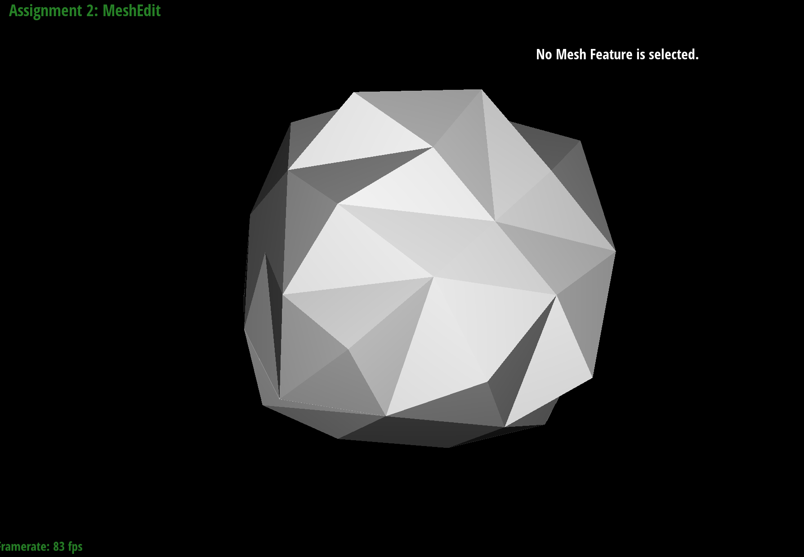 |
Additional Notes (please remove)
- You can also add code if you'd like as so:
code code code - If you'd like to add math equations,
- You can write inline equations like so: \( a^2 + b^2 = c^2 \)
- You can write display equations like so: \[ a^2 + b^2 = c^2 \]